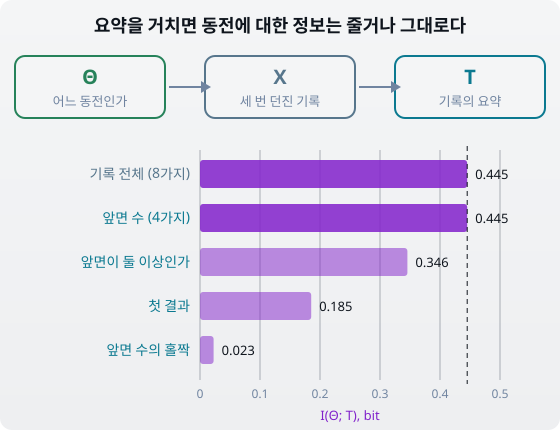
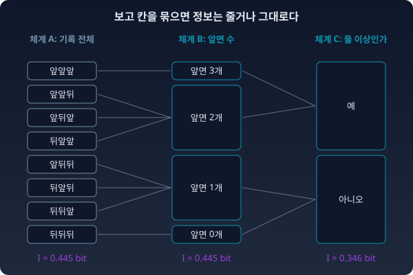
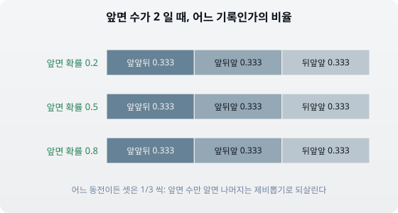
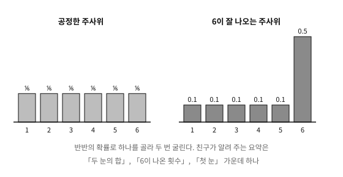
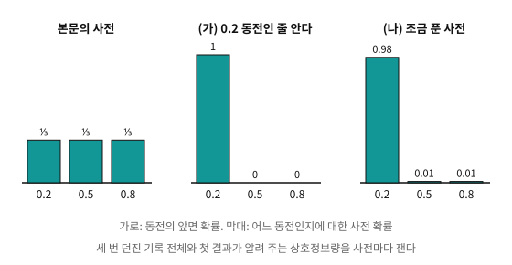
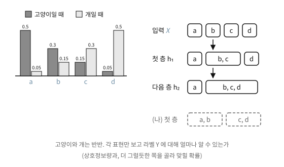

첸초프의 정리를 다룬 절에서 날씨 기록을 두 분포로 비교했을 때, 결과를 잘게 쪼개 적어도 KL은 그대로였고 칸을 합치면 KL이 줄었다. 합쳐도 그대로인 것은 합친 칸 안에서 두 분포가 똑같은 비율로 나뉠 때뿐이었다(A = (0.5, 0.3, 0.2)와 C = (0.25, 0.45, 0.30)는 결과 2와 3이 둘 다 3 : 2였다). 그 비교에는 분포가 둘뿐이었지만, 실제로 데이터를 다룰 때는 그럴듯한 파라미터 후보가 여럿이고 데이터는 늘 무언가로 요약된다. 로그 대신 평균과 개수만 남기고, 사진을 줄여 저장하고, 신경망은 입력을 층마다 다른 벡터로 바꾼다. 요약이 파라미터에 대해 얼마나 알려 주는지는 상호정보량(한 변수를 알 때 다른 변수의 불확실성이 평균으로 얼마나 줄어드는지 재는 양) 하나로 잴 수 있다. 그러면 요약을 잘 고르면 기록 전체보다 더 많이 알려 줄 수도 있을까? 그리고 「이 요약은 아무것도 잃지 않았다」는 말을 숫자로 하면 어떻게 될까?
동전 셋, 기록 여덟 가지
상자에 앞면이 나올 확률이 0.2, 0.5, 0.8인 동전이 셋 있다. 누군가 하나를 고르게 꺼내 세 번 던지고 그 기록을 우리에게 넘길 때, 우리가 알고 싶은 것은 어느 동전인가(Θ, 대문자 세타)다. 파라미터 후보가 셋, 기록이 여덟 가지라 모든 경우를 손으로 셀 수 있고, 무엇이 충분통계량(그것만 알면 파라미터에 대해 데이터 전체가 알려 주는 것을 다 아는 요약)인지 이미 알려진 경우라 답을 맞춰 볼 수 있어서 고른 예다. 앞면이 나온 횟수와 던진 횟수만 알면 타율을 알 수 있다는 야구 기록과 같은 구조다.
어느 동전인지 모를 때의 엔트로피는 log₂ 3 = 1.585 bit인데, 세 번 던진 기록 전체를 보면 평균 0.445 bit만큼 덜 헷갈리게 된다. 0.445 bit가 기록과 동전 사이의 상호정보량 I(Θ; X) = 0.445다. 이제 기록을 넘기는 사람이 기록 대신 요약 하나만 알려 준다고 하자. 요약마다 상호정보량을 재면 아래와 같다.

동전 셋 가운데 어느 것인지(Θ), 세 번 던진 기록(X), 기록의 요약(T)이 차례로 이어진다. 요약마다 I(Θ; T): 기록 전체 0.445, 앞면 수 0.445, 앞면이 둘 이상인가 0.346, 첫 결과 0.185, 앞면 수의 홀짝 0.023. 점선은 기록 전체의 값
어떤 요약도 점선을 넘지 못했고, 점선에 닿은 것은 앞면 수 하나뿐이다. 왜 앞면 수만 닿았는지는 첸초프 절의 칸 합치기로 읽히는데, 요약은 기록 여덟 가지를 몇 개의 칸으로 합치는 일이기 때문이다. 앞면 수는 앞면이 하나인 세 기록(앞뒤뒤, 뒤앞뒤, 뒤뒤앞)을 한 칸에 모으는데, 앞뒤뒤·뒤앞뒤·뒤뒤앞은 어느 동전에서나 똑같이 1/3씩 나온다. 칸 안의 나뉨이 세 동전에서 같으니 합쳐도 동전을 가를 단서를 버리지 않지만, 첫 결과는 첫 던지기가 앞면인 기록 넷을 한 칸에 모은다. 첫 던지기가 앞면인 네 기록의 나뉨은 0.2 동전에서 (0.64, 0.16, 0.16, 0.04), 0.8 동전에서 (0.04, 0.16, 0.16, 0.64)로 서로 다르다. 0.2 동전과 0.8 동전에서 서로 다르던 네 기록의 나뉨 비율이 첫 결과의 칸 안에 묻혀 버린다.
왜 어떤 요약도 점선을 넘지 못하는지는 상호정보량을 KL로 다시 쓰면 보인다. 상호정보량은 결합 분포와 주변분포의 곱 사이의 KL이었고, 같은 양을 동전마다 「그 동전의 기록 분포가 동전을 모를 때의 기록 분포와 얼마나 다른가」를 잰 KL의 평균으로도 쓸 수 있다.
요약은 두 분포 p(x∣θ)와 p(x)에 똑같은 칸 합치기를 한다. 칸을 합치면 KL은 줄거나 그대로라는 것을 첸초프 절에서 보았으니, 동전마다 KL이 줄거나 그대로고, 그 평균인 상호정보량도 줄거나 같다. 숫자로 보면 기록 전체의 KL은 동전마다 (0.617, 0.101, 0.617)이고 평균이 0.445다. 첫 결과로 요약하면 (0.278, 0, 0.278)로 줄어 평균이 0.185가 된다. 0.5 동전의 KL이 0이 된 것은, 첫 결과가 앞면일 확률이 0.5 동전에서도 동전을 모를 때에서도 똑같이 0.5이기 때문이다.
이렇게 마르코프 체인(동전이 기록을 낳고, 기록이 요약을 낳는 차례) Θ → X → T에서 데이터를 어떻게 가공해도 파라미터에 대한 상호정보량이 늘지 않는다는 성질을 정보 처리 부등식이라 부른다. 등호가 서는 것은 동전마다 KL이 하나도 줄지 않을 때다. 합친 칸마다 안쪽 나뉨이 모든 동전에서 같아야 하고, 「칸 안의 나뉨이 동전과 상관없다」는 조건이 충분통계량의 정의와 같다. 사전을 (0.6, 0.3, 0.1)로 바꿔 다시 재도 기록 전체와 앞면 수는 0.324로 같고, 나머지 요약은 모자란다. 그래서 충분통계량을 이렇게 다시 말할 수 있다. 모든 후보에 0보다 큰 확률을 주는 사전 아래에서, 파라미터에 대한 상호정보량을 하나도 잃지 않는 요약이 충분통계량이다. 데이터 백만 개를 숫자 세 개로 줄여도 잃는 것이 없다던 지수족의 충분통계량은, 상호정보량으로 재도 한 자리도 줄지 않는 요약이다.
첸초프의 정리와도 이렇게 이어진다. 첸초프는 「정보를 잃지 않는 옮기기」를 거쳐도 값이 변하지 않는 계량을 찾았고, 답은 피셔 계량 하나였다. 그 잃지 않는 옮기기가 바로 정보 처리 부등식에서 등호가 서는 옮기기이고, 반대로 칸 안의 나뉨이 파라미터에 따라 달라지는 옮기기는 KL도 상호정보량도 줄인다.
파이썬
import itertools
import numpy as np
thetas = np.array([0.2, 0.5, 0.8]) # 동전 셋의 앞면 확률
prior = np.ones(3) / 3 # 어느 동전인지 모름: 고르게
records = list(itertools.product([0, 1], repeat=3)) # 세 번 던진 기록 8가지, 1 = 앞면
lik = np.array([[np.prod([t if r else 1 - t for r in x]) for x in records] for t in thetas])
def mi(summary): # I(Θ; T) (bit), T = summary(기록)
vals = sorted({summary(x) for x in records})
J = np.zeros((3, len(vals))) # J[동전, 요약값]
for k, x in enumerate(records):
J[:, vals.index(summary(x))] += prior * lik[:, k]
indep = J.sum(1, keepdims=True) * J.sum(0, keepdims=True)
m = J > 0
return (J[m] * np.log2(J[m] / indep[m])).sum()
for name, f in [("기록 전체", lambda x: x), ("앞면 수", sum), ("앞면이 둘 이상인가", lambda x: sum(x) >= 2),
("첫 결과", lambda x: x[0]), ("앞면 수의 홀짝", lambda x: sum(x) % 2)]:
print(f"I(Θ; {name}) = {mi(f):.3f}")
# I(Θ; 기록 전체) = 0.445
# I(Θ; 앞면 수) = 0.445
# I(Θ; 앞면이 둘 이상인가) = 0.346
# I(Θ; 첫 결과) = 0.185
# I(Θ; 앞면 수의 홀짝) = 0.023
ML에서: 층은 라벨에 대한 정보를 만들지 못한다
신경망은 입력 X를 층마다 다른 벡터 h₁, h₂, …로 바꾼다. 라벨이 입력을 낳고, 입력이 h₁을, h₁이 h₂를 낳는 마르코프 체인이므로 정보 처리 부등식이 그대로 걸린다. 라벨에 대한 상호정보량은 층을 지날수록 줄거나 그대로이고, 어떤 층도 입력에 없던 라벨 정보를 새로 만들지 못한다. 문제 8에서 본 「상위 두 토큰만 알려 주는 API」가 KL을 늘 작게 보여 준 것도 같은 부등식의 한 모습이다. 그렇다면 층은 왜 쌓는지를 아래 문제 11에서 숫자로 따져 본다.
이 절의 결론
「데이터를 요약하고 가공하는 어떤 단계도 파라미터에 대한 상호정보량을 늘리지 못한다. 하나도 줄이지 않는 요약이 충분통계량이고, 그 요약은 칸 안의 나뉨이 파라미터와 상관없는 칸 합치기다.」
인물 이야기: 블랙웰과 「정찰의 비교」
1951년 쿨백과 라이블러는 논문 「정보와 충분성에 대하여」에서, 엔트로피 쪽 뜻으로 잰 샘플 속 정보는 어떤 통계적 조작으로도 늘릴 수 없고 줄지 않는 것은 충분통계량을 쓸 때뿐임을 보였다. 같은 무렵, 정보의 양을 재지 않고 같은 결론에 닿은 사람이 있었다. 그 물음은 전쟁터에서 나왔다.
데이비드 블랙웰(David Blackwell, 1919–2010)은 여름마다 랜드 연구소(RAND)에 자문으로 갔고, 거기서 「정찰의 비교(Comparison of Reconnaissances)」라 불리던 군사 문제를 만났다. 적과 겨루기 전에 적이 무엇을 하는지 엿볼 기회가 있고 정찰 체계가 둘 있다면, 어느 쪽을 써야 할까? 어떤 상황에서든 한 체계가 더 많은 정보를 준다면 그쪽이 분명히 더 나은 체계다. 보넨블러스트(H. F. Bohnenblust), 셔먼(S. Sherman), 섀플리(L. S. Shapley)가 가설이 둘뿐인 경우의 이론을 세워 두었는데, 블랙웰은 그 일을 보고 더 강한 비교 방법을 떠올려 두 방법이 같은지를 물었다. 자기 방법이 적어도 그만큼 강하다는 것은 분명했지만 실제로 더 강하지는 않으리라 짐작했고, 가설이 둘인 경우에 두 방법이 같음을 증명했다. 이 결과를 1950년 여름 제2회 버클리 심포지엄에서 발표해 1951년 논문집에 「실험의 비교(Comparison of Experiments)」로 실었다. 그는 뒤에 「관심은 군사 문제가 아니었지만, 문제는 군사 문제를 생각하다 나왔다」고 회고했다.

정찰 체계 셋의 보고 칸. 기록 전체(8칸)의 칸을 묶으면 앞면 수(4칸)의 보고가 되고, 앞면 수의 칸을 다시 묶으면 「앞면이 둘 이상인가」(2칸)의 보고가 된다. 어느 동전인지에 대한 상호정보량은 0.445, 0.445, 0.346 bit 로 줄거나 그대로다
블랙웰의 비교를 이 절의 말로 옮기면, 체계 B 의 보고를 체계 A 의 보고 칸을 합치거나 뭉개서 얻을 수 있을 때 A 는 어떤 상황에서도 B 보다 낫다. 동전 셋의 예에서 기록 전체를 알려 주는 체계는 칸을 합쳐 앞면 수를 만들 수 있고, 앞면 수는 다시 「앞면이 둘 이상인가」를 만들 수 있다. 거꾸로 앞면 수만 받아도, 앞면이 나온 자리를 무작위로 골라 기록 전체와 분포가 똑같은 가짜 기록을 만들 수 있다. 앞면 수가 같은 기록들 사이의 비율이 어느 동전에서나 같기 때문이다. 두 보고가 서로를 만들어 낼 수 있으니 둘은 어떤 상황에서도 똑같이 쓸모 있고, 이렇게 정보를 하나도 버리지 않는 칸 합치기가 충분통계량이다.

앞면 수가 2인 기록 셋(앞앞뒤, 앞뒤앞, 뒤앞앞)이 차지하는 비율. 앞면 확률이 0.2 든 0.5 든 0.8 이든 셋은 늘 1/3 씩이라, 앞면 수만 알면 나머지는 동전과 상관없는 제비뽑기로 되살릴 수 있다
김민준
정찰 체계 둘을 비교하는 거면, 위 파이썬처럼 상호정보량을 재서 큰 쪽을 고르면 되지 않아요? 0.445와 0.346이면 바로 갈리는데요.
선생님
블랙웰이 물은 건 「어떤 상황에서든」 더 나은가였어요. 정찰 결과로 정할 일이 공격 시점일 수도, 병력 배치일 수도 있죠. 상황마다 무엇이 손해인지가 달라요.
이서연
상황마다 손익표가 다르면… 숫자 하나가 크다고 모든 손익표에서 이긴다는 보장은 없겠네요. 상황은 끝없이 만들 수 있으니 하나씩 다 풀어 볼 수도 없고요.
선생님
게다가 블랙웰이 발표한 1950년 여름에는 쿨백과 라이블러의 논문도 아직 나오기 전이었어요. 정보를 숫자 하나로 재서 견주는 방법이 그때는 없었던 거죠.
김민준
잴 숫자도 없고 상황을 다 늘어놓을 수도 없으면, 무엇으로 「언제나 낫다」를 보여요?
이서연
위 그림처럼 B의 보고를 A의 보고에서 칸을 합쳐 만들 수 있으면… A를 받은 사람은 B를 받은 사람이 하는 일을 늘 그대로 따라 할 수 있네요. 손익표를 하나도 안 봐도요.
선생님
그래요. 블랙웰은 상황을 늘어놓는 대신 보고와 보고 사이의 관계만 봤어요.
김민준
앞면 수는 칸을 합쳤는데도 기록 전체를 되살릴 수 있었죠. 그럼 다른 실험에서는 「합쳐도 되살릴 수 있는 요약」을 어떻게 알아봐요?
문제 9. 6이 잘 나오는 주사위
상자에 주사위가 둘 있는데, 하나는 공정하고 다른 하나는 6이 나올 확률이 0.5이고 나머지 눈은 0.1씩이다. 친구가 둘 가운데 하나를 반반의 확률로 골라 두 번 굴리고, 두 눈 대신 요약 하나만 알려 준다. 두 눈을 그대로 알려 주면 어느 주사위인지에 대한 상호정보량은 0.1755 bit다. (가) 요약 「두 눈의 합」「6이 나온 횟수」「첫 눈」 가운데 어느 것이 어느 주사위인지에 대해 가장 많이 알려 주는가? 각각의 상호정보량을 0.1755와 비교하라. (나) 합이 7일 때, 두 눈이 (1, 6)인 경우와 (3, 4)인 경우에 조작된 주사위일 확률을 각각 구하라. (다) 6이 나온 횟수는 왜 충분통계량인가?

공정한 주사위(눈마다 ⅙)와 6이 잘 나오는 주사위(1~5 는 0.1, 6 은 0.5)의 눈 확률 막대
함께 풀기
김민준
돌려 봤어요. 합 0.1279, 6이 나온 횟수 0.1755, 첫 눈 0.0933 bit예요.
김민준
6이 나온 횟수가 두 눈 그대로랑 같고, 합은 모자라요. 합이 12면 조작일 확률이 0.900이나 되는데도요.
선생님
합이 7인 날을 봐요. (1, 6)과 (3, 4)는 합 칸에서 한 칸에 들어가는데, 조작일 확률도 같아요?
김민준
(1, 6)은 0.643, (3, 4)는 0.265예요. 많이 다르네요. 합은 6이 끼어 있는 7과 6이 없는 7을 한 칸에 섞어 버려요. 첸초프 절에서 결과 2와 3을 합치면 KL이 줄던 것처럼, 합도 단서를 한 칸에 섞어 버렸어요.
이서연
(다)는 반대로 6이 나온 횟수의 칸 안을 보면 돼. 6이 한 번 나온 칸에는 (6, 1)부터 (5, 6)까지 열 가지가 있는데, 6이 아닌 눈은 공정한 주사위에서도 조작된 주사위에서도 다섯 눈이 모두 같은 확률이야.
이서연
아, 그런데 공정한 주사위에서 6이 아닌 눈은 1/6, 조작된 쪽은 0.1이라 확률 자체는 달라요. 그래도 충분통계량이 돼요?
선생님
칸을 합칠 때 따져야 하는 건 칸 하나의 확률이에요, 칸 안에서 기록들이 나뉘는 비율이에요?
이서연
나뉘는 비율이요. 6이 한 번 나온 칸 안의 열 가지는 두 주사위 모두에서 똑같이 1/10씩이에요.
김민준
그럼 칸 전체의 확률이 두 주사위에서 다른 건?
이서연
그건 6이 나온 횟수 자체가 이미 알려 주는 정보야. 동전에서 앞면이 하나인 세 기록이 어느 동전에서나 1/3씩이었던 것과 같아.
문제 10. 한 동전에 몰린 사전, 그리고 피셔 정보
본문의 동전 셋(앞면 확률 0.2, 0.5, 0.8)과 세 번 던진 기록을 그대로 쓴다. (가) 사전이 (1, 0, 0)이라서 0.2 동전인 줄 이미 안다면 I(Θ; 기록 전체)와 I(Θ; 첫 결과)는 얼마인가? 두 값이 같으니 첫 결과는 충분통계량이라고 해도 되는가? (나) 사전을 (0.98, 0.01, 0.01)로 조금만 풀면 두 값은 어떻게 되는가? (다) 앞면 확률 θ를 이어진 값의 파라미터로 보고, θ = 0.5에서 기록 전체, 앞면 수, 첫 결과, 「앞면이 둘 이상인가」 각각의 피셔 정보를 구하라. 첸초프의 정리와 어떻게 이어지는가?

앞면 확률 0.2, 0.5, 0.8 인 동전 셋 위의 사전 세 가지: 본문의 고른 사전 (⅓, ⅓, ⅓), (가)의 (1, 0, 0), (나)의 (0.98, 0.01, 0.01)
함께 풀기
이서연
(가)는 둘 다 0 bit야. 동전을 이미 아니까 무엇을 봐도 더 알 게 없지. 등호가 섰으니까 정의대로면 첫 결과도 충분통계량이야.
선생님
그 사전 아래에서 「앞면 수의 홀짝」은 몇 bit예요? 아무것도 알려 주지 않는 요약, 예를 들어 늘 0이라고만 말하는 요약은요?
이서연
…둘 다 0이에요. 그 사전에서는 모든 요약이 등호를 세워요. 늘 0이라고 말하는 요약까지 충분통계량이 되면 말이 안 되죠. 본문의 정의에 「모든 후보에 0보다 큰 확률을 주는 사전」이라는 조건이 왜 붙었는지 이제 알겠네요.
김민준
(나)는 기록 전체 0.0425, 첫 결과 0.0149예요. 사전을 조금만 풀어도 바로 벌어져요. 등호가 섰던 건 첫 결과가 좋아서가 아니라 물을 게 없어서였어요.
김민준
(다)는 동전 한 번의 피셔 정보가 1/(θ(1 − θ)) = 4니까, 세 번이면 12. 앞면 수도 12, 첫 결과는 4예요. 「앞면이 둘 이상인가」는 9가 나와요.
이서연
예/아니오 하나뿐인데 동전 한 번의 4보다 커?
김민준
나도 그게 이상해서 식을 봤어. 둘 이상일 확률 g(θ) = 3θ²(1 − θ) + θ³ 은 θ = 0.5에서 기울기 g′ = 1.5로 움직이는데, 동전 한 번은 앞면 확률이 θ 그대로라 기울기가 1이거든. 피셔 정보로 하면 g′² / (g(1 − g)) = 1.5² / 0.25 = 9야.
이서연
같은 예/아니오여도 θ가 조금 바뀔 때 답이 얼마나 예민하게 바뀌느냐가 다르구나. 세 번 던져 보고 내린 예/아니오라서, 한 번 던진 결과보다 θ에 예민한 거고.
이서연
12, 12, 9, 4. 피셔 정보도 상호정보량이랑 같은 순서로 줄어요. 앞면 수만 그대로고요.
선생님
그래요. 피셔 정보는 작은 걸음의 길이를 재는 피셔 계량이니, 요약이 칸을 합치면 피셔 계량이 재는 길이도 줄거나 같아요. 길이가 줄지 않는 옮기기가 어떤 것이었죠?
이서연
첸초프 정리에서 말한 정보를 잃지 않는 옮기기, 곧 충분통계량이요. 피셔 계량이 변하지 않아야 한다고 요구했던 바로 그 옮기기가, 상호정보량에서 등호를 세우는 옮기기였네요.
문제 11. 층을 지날수록
고양이 사진과 개 사진이 반반이다. 입력 X는 네 가지 모양 a, b, c, d 가운데 하나로 나오는데, 고양이일 때 (0.5, 0.3, 0.15, 0.05), 개일 때 (0.05, 0.15, 0.3, 0.5)의 확률로 나온다. 첫 층은 b와 c를 같은 값으로 보내고(h₁ = a, {b, c}, d), 다음 층은 거기서 {b, c}와 d를 다시 합친다(h₂ = a, {b, c, d}). (가) 라벨 Y에 대한 상호정보량 I(Y; X), I(Y; h₁), I(Y; h₂)를 bit로 구하라. (나) 첫 층을 바꿔 a와 b, c와 d를 합치면 상호정보량과, 그 표현만 보고 라벨을 가장 잘 맞힐 확률은 어떻게 되는가? X 그대로일 때와 비교하라. (다) 층이 라벨 정보를 늘리지 못한다면, 신경망은 왜 층을 쌓는가?

왼쪽은 고양이일 때 (0.5, 0.3, 0.15, 0.05), 개일 때 (0.05, 0.15, 0.3, 0.5)로 나오는 입력 a~d 의 막대. 오른쪽은 입력 X 의 네 칸이 첫 층 h₁ 에서 a, {b, c}, d 로, 다음 층 h₂ 에서 a, {b, c, d} 로 합쳐지는 차례와, (나)의 첫 층 {a, b}, {c, d}
함께 풀기
김민준
(가)는 0.3450, 0.3083, 0.2053 bit예요. 층을 지날 때마다 줄어요. 부등식대로네요.
김민준
(나)는 a와 b, c와 d를 합치면 0.2781이에요. 그 표현만 보고 더 그럴듯한 쪽을 고르면 맞힐 확률은 0.800이고, X 그대로 봐도 0.800, h₁은 0.725예요.
김민준
상호정보량은 h₁보다도 작은데, 맞힐 확률은 X 그대로랑 같아요.
이서연
a와 b는 둘 다 고양이 쪽, c와 d는 둘 다 개 쪽이라, 합쳐도 어느 쪽인지는 그대로 남아. 버린 건 「얼마나 확실한가」야. a면 고양이일 확률이 0.91인데 b면 0.67이었거든. 맞힐 확률은 0.91과 0.67의 차이를 안 보지만 상호정보량은 봐.
선생님
그럼 (다)는요? 층이 정보를 만들지 못하는데도 왜 층을 쌓아요?
이서연
만들지 못하면 그냥 입력을 바로 마지막 분류기에 넣는 게 가장 좋은 거 아니에요? 입력이 상호정보량이 가장 크니까요.
선생님
사진 한 장의 픽셀 값을 그대로 직선 하나로 가르는 분류기에 넣으면 고양이와 개를 잘 가를까요? 픽셀 안에 라벨 정보가 다 있는데도요.
이서연
못 가르죠. 정보가 있는 것과 직선 하나로 읽어 낼 수 있는 것은 다르네요. 층은 정보를 새로 만드는 게 아니라, 라벨과 상관없는 것을 버리고 남은 것을 마지막 층이 읽기 쉬운 모양으로 다시 늘어놓는 거고요. (나)의 표현처럼 잘 버리면 맞히는 데는 손해가 없고요.
김민준
요리 재료 손질이랑 비슷하네요. 껍질을 벗기고 썬다고 재료가 늘지는 않는데, 바로 팬에 넣을 수 있는 모양이 되잖아요.